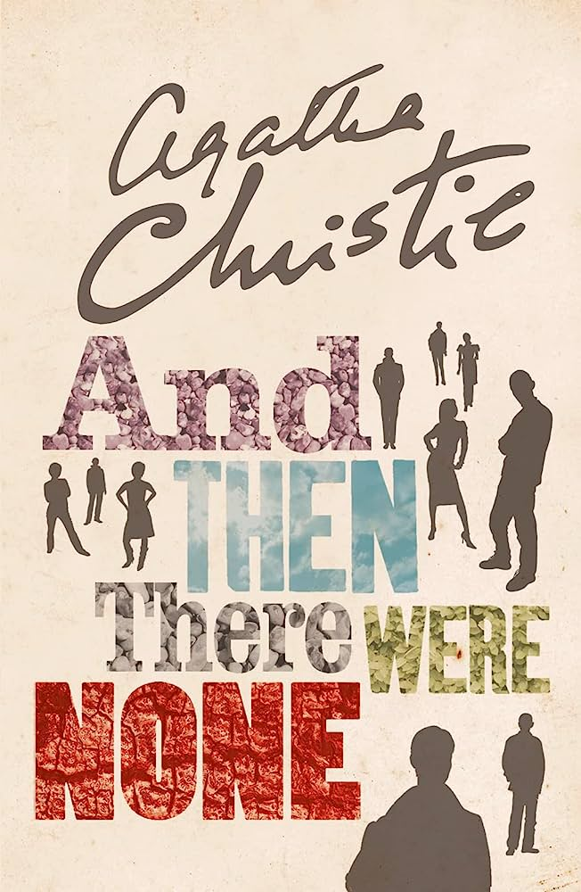

The Girl with the Dragon Tattoo
Stieg Larsson

Prepare for a gripping and intricately woven thriller with "The Girl with the Dragon Tattoo." Stieg Larsson's novel introduces readers to the enigmatic Lisbeth Salander and investigative journalist Mikael Blomkvist as they delve into a dark web of secrets, corruption, and murder. With its compelling characters, complex plot, and exploration of social issues, this book delivers a thrilling ride that keeps readers on the edge of their seats, unraveling a chilling mystery that exposes the dark underbelly of society.
Gone Girl
Gillian Flynn

Prepare to be captivated by a tale of psychological suspense and twisted relationships in "Gone Girl." Gillian Flynn's gripping novel explores the disappearance of Amy Dunne and the ensuing investigation that unveils shocking secrets and mind games. With its unreliable narrators, unexpected twists, and exploration of the complexities of marriage, "Gone Girl" keeps readers guessing until the very end, challenging perceptions and delving into the dark side of human nature.
The Da Vinci Code
Dan Brown
Embark on a thrilling and intellectual adventure through art, religion, and conspiracy with "The Da Vinci Code." Dan Brown's bestseller takes readers on a quest alongside symbologist Robert Langdon as he unravels a centuries-old mystery with implications that could shake the foundations of Christianity. With its fast-paced plot, historical intrigue, and thought-provoking ideas, "The Da Vinci Code" keeps readers engrossed as they navigate a web of hidden symbols and enigmatic clues.
The Silence of the Lambs
Thomas Harris
Prepare to be immersed in a chilling and psychological thriller with "The Silence of the Lambs." Thomas Harris introduces readers to FBI trainee Clarice Starling as she enters the mind of the brilliant and manipulative serial killer, Dr. Hannibal Lecter, to solve a complex case. With its atmospheric tension, complex characters, and psychological cat-and-mouse game, this book is a masterclass in suspense and offers a glimpse into the darkest corners of the human psyche.
The Girl on the Train
Paula Hawkins

Step aboard a suspenseful and emotionally charged journey with "The Girl on the Train." Paula Hawkins weaves a gripping narrative that follows Rachel, an unreliable narrator, as she becomes entangled in a missing person investigation. With its intricate plot, shifting perspectives, and exploration of addiction and memory, this book keeps readers guessing and questioning the reliability of their own perceptions until the final reveal.
The Bourne Identity
Robert Ludlum
Prepare for an adrenaline-fueled espionage adventure with "The Bourne Identity." Robert Ludlum's gripping novel introduces readers to Jason Bourne, a man suffering from amnesia who discovers he is a highly trained assassin caught in a web of conspiracy. With its fast-paced action, intricate plot twists, and high-stakes espionage, this book delivers a thrilling ride that keeps readers on the edge of their seats, exploring themes of identity, redemption, and the shadowy world of international intrigue.
The Shining
Stephen King
Prepare to be immersed in a haunting tale of psychological horror with "The Shining." Stephen King's chilling novel introduces readers to the Torrance family as they spend a winter caretaking a remote and haunted hotel. With its atmospheric setting, psychological tension, and exploration of isolation and madness, this book is a masterclass in suspense and psychological terror, leaving readers captivated and unsettled long after the last page.
The Spy Who Came in from the Cold
John le Carré
Immerse yourself in the thrilling world of espionage and Cold War intrigue with "The Spy Who Came in from the Cold." John le Carré's classic novel offers a captivating glimpse into the dark and morally ambiguous realm of intelligence operations. With his masterful storytelling, intricate plotting, and nuanced character development, le Carré creates a gripping narrative that exposes the intricate web of betrayal, loyalty, and deception that defines the world of spies. This book will keep you on the edge of your seat as you navigate a world of shifting allegiances and moral gray areas, offering a riveting exploration of the human cost of espionage
The Hunt for Red October
Tom Clancy
Prepare for an exhilarating and technologically detailed military thriller with "The Hunt for Red October." Tom Clancy's gripping novel follows the high-stakes pursuit of a Soviet submarine captain attempting to defect to the United States. With its meticulously researched plot, complex characters, and edge-of-your-seat suspense, this book offers a thrilling and immersive reading experience that keeps readers engrossed in the world of international naval warfare.
And Then There Were None
Agatha Christie
Prepare to be enthralled by the master of mystery with "And Then There Were None." Agatha Christie's iconic novel takes readers to a secluded island where ten strangers are lured and then mysteriously killed off one by one. With its clever plot twists, intricate puzzle-solving, and a cast of intriguing characters, this book is a gripping and suspenseful read that keeps readers guessing until the final reveal, showcasing Christie's unparalleled skill in crafting compelling mysteries.